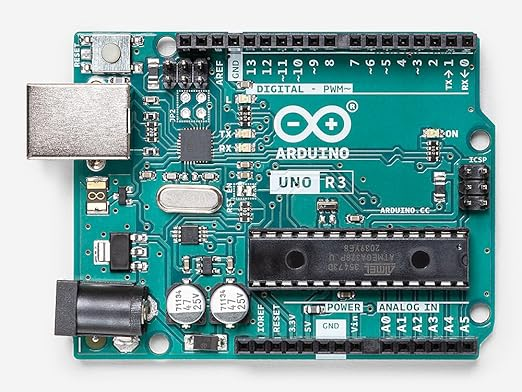
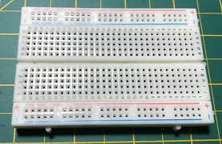
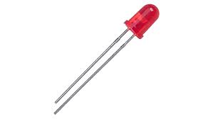
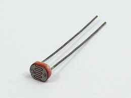

Arbuinoってなに？
「マイコンボード」の一種。プログラムでセンサーやモーターを制御し、電子工作やIoT機器の試作に使われる「小型のコンピュータ基板」。

今回使った機材の説明
ブレッドボード
はんだ付けをせずに電子部品やジャンパ線を穴に差し込むだけで、簡単に電子回路を組める試作用基板。
部品の交換や再利用が容易で、電子工作のプロトタイピングや実験、回路の動作テストに最適。

LED
正式名称は、「発光ダイオード（Light-Emitting Diode）」
＋極の長い方を「アノード」、ー極の短い方を「カソード」という。

CdSセル
通称「フォトレジスタ」、入射する光の強度が増加すると電気抵抗が低下する電子部品である。
光依存性抵抗や 光導電体、フォトセルとも呼ばれる。
